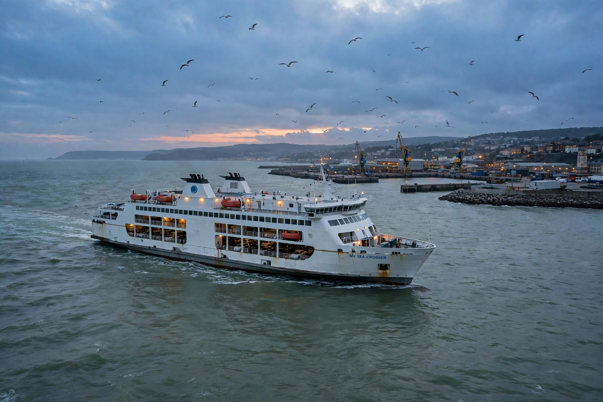

[Image placeholder: A ferry crossing the Irish Sea toward Dublin]The **Irish Sea** is the body of water separating the islands of Ireland and Great Britain. It connects to the Atlantic through St George's Channel in the south and the North Channel in the north, and contains the Isle of Man roughly at its centre. About 300 km long and 30–200 km wide, it covers roughly 46,000 km² with generally shallow depths, deepening to over 250 m in the Beaufort's Dyke trench.
For millennia the Irish Sea has been a highway rather than a barrier: Roman, Viking, Norman and industrial traffic crossed it, and today ferries link Dublin and Belfast with Holyhead, Liverpool, Heysham, Cairnryan and Fishguard, alongside offshore wind farms and gas fields. Its waters are among the most radioactive in the world due to historical discharges from the Sellafield nuclear reprocessing plant in Cumbria — a long-standing Irish grievance — though levels have fallen greatly since the 1970s.
Islands include Anglesey (the largest), the Isle of Man, Walney and Rathlin. The sea supports fisheries (Nephrops prawns, scallops), seal colonies, and some of the UK and Ireland's largest offshore wind arrays, with far larger zones now proposed for the energy transition.